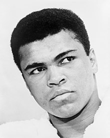

Muhammad Ali
1967-2016
The Greatest
Muhammad Ali born Cassius Marcellus Clay Jr.; January 17, 1942 June 3, 2016 was an American professional boxer and activist. Nicknamed "the Greatest", he is regarded as one of the most significant sports figures of the 20th century and is often regarded as the greatest heavyweight boxer of all time. He held the Ring magazine heavyweight title from 1964 to 1970. He was the undisputed champion from 1974 to 1978 and the WBA and Ring heavyweight champion from 1978 to 1979. In 1999, he was named Sportsman of the Century by Sports Illustrated and the Sports Personality of the Century by the BBC.
Achievements
- HE WON A GOLD MEDAL AT THE 1960 OLYMPICS
- HE WAS THE YOUNGEST TO UNSEAT A REIGNING HEAVYWEIGHT CHAMPION
- HE FOUGHT THE FIGHT OF THE CENTURY AGAINST JOE FRAZIER
- HE WON THE RUMBLE IN THE JUNGLE AGAINST GEORGE FOREMAN
- HE WON THE THRILLA IN MANILA AGAINST JOE FRAZIER
- HE WAS THE FIRST MAN TO WIN THE HEAVYWEIGHT TITLE THREE TIMES
- HIS REFUSAL TO PARTICIPATE IN THE VIETNAM WAR MADE HIM AN ICON